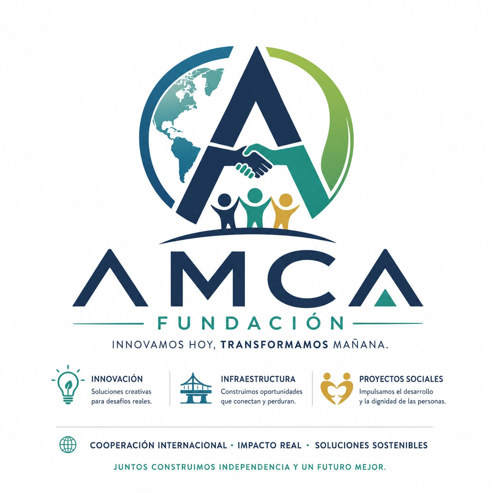

Descentralizamos la agroindustria rural en Colombia mediante infraestructura verde y analítica predictiva de datos.
Decentralizing rural agro-industry in Colombia through green infrastructure and predictive data analytics.
Pérdidas postcosecha actuales en la pequeña producción.
Current smallholder horticultural post-harvest losses.
Operación con energía solar en Nodos Territoriales.
Solar-powered operations across Territorial Nodes.
Utilidades corporativas. Reinversión total en la base social.
Corporate profits. 100% reinvested into local communities.
Diseñamos, gestionamos y ejecutamos soluciones integrales de triple impacto mediante la articulación de infraestructura verde, bioeconomía circular y herramientas tecnológicas avanzadas. Nuestro propósito es empoderar a las comunidades rurales, asociaciones productivas y poblaciones en condición de vulnerabilidad interseccional en Colombia, transformando las mermas agrícolas en activos económicos estables.
We design, manage, and execute comprehensive triple-impact solutions by combining green infrastructure, circular bioeconomy, and advanced technological tools. Our purpose is to empower rural communities, smallholder associations, and intersectionally vulnerable populations in Colombia, transforming post-harvest waste into stable economic assets.
Para el año 2031, la Fundación AMCA será reconocida internacionalmente como un modelo de vanguardia en la descentralización de la agroindustria rural y la transferencia tecnológica en zonas de posconflicto en América Latina, consolidando alianzas financieras transparentes y auditables con la cooperación global, el Estado y el sector privado.
By 2031, Fundación AMCA will be internationally recognized as a vanguard model for decentralized rural agro-industry and technology transfer within post-conflict zones across Latin America, consolidating transparent, auditable financial partnerships with global cooperation, governments, and the private sector.
Un equipo interdisciplinario con más de 80 años de experiencia combinada en territorio, gestión pública y cooperación.
An interdisciplinary team with over 80 years of combined experience in field deployment, public governance, and global cooperation.
Directora Ejecutiva y Representante Legal
Executive Director & Legal Representative
Formación: Administración Financiera
Experta en formulación, seguimiento y ejecución de proyectos de desarrollo territorial, articulación público-privada y finanzas comunitarias sostenibles.
Expert in formulating, monitoring, and executing territorial development projects, public-private partnerships, and sustainable community financing.
Directora de Bioeconomía y Alianzas Comunitarias
Director of Bioeconomy & Community Alliances
Formación: MPA, Bioingeniería, Adm. Empresas
Especialista en innovación pública y gobernanza territorial. Vinculada al área de planeación estratégica y Gobierno Abierto del Ministerio de Ambiente.
Specialist in public innovation and territorial governance. Active in strategic planning and Open Government frameworks within the Ministry of Environment.
Director de Infraestructura y Conectividad
Director of Resilient Infrastructure & Data
Formación: M.Eng, Ing. Mecánico Industrial, Adm. Empresas
Experto senior en gerencia de macroproyectos bajo estándares PMO internacionales y modelación financiera en alianza con USAID y el BID.
Senior expert in large-scale project management under international PMO standards, driving portfolios funded by USAID and the IDB.
Esp. en Políticas Públicas y Comunidad
Public Policy & Community Specialist
+15 años de experiencia | Cundinamarca
+15 Years Experience | Cundinamarca
Consultora Senior en Economía Agrícola e Hidrología
Agricultural Economics & Irrigation Consultant
+15 años de experiencia | Distritos de Riego
+15 Years Experience | Irrigation Districts
Consultor Senior en Urbanismo y Ordenamiento
Urban Planning & Territorial Infrastructure
+15 años de experiencia | Planes de Ordenamiento
+15 Years Experience | Land-Use Regulations
Operamos bajo el Régimen Tributario Especial (RTE) de la DIAN en Colombia. El 100% de nuestras compras, viáticos y transacciones logísticas se procesan exclusivamente mediante Facturación Electrónica de Venta (FEV), garantizando trazabilidad contable total según normas NIIF/IFRS para auditorías de la cooperación internacional.
We operate under Colombia's Special Tax Regime (RTE). 100% of our operating expenses, procurement, and field travel logistics are strictly processed through electronic invoicing (FEV), ensuring absolute accounting traceability under NIIF/IFRS standards for international donor audits.